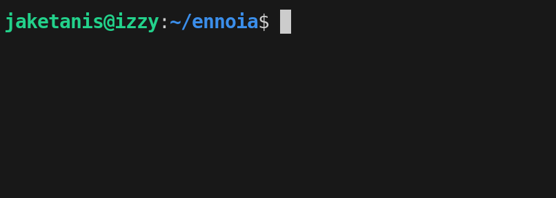
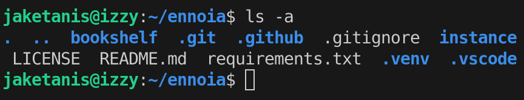
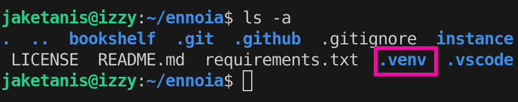
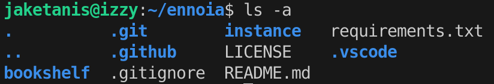
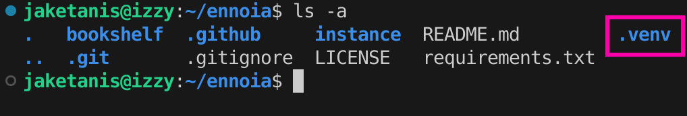
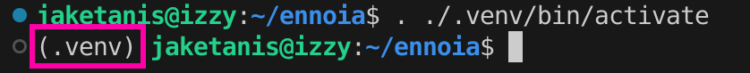
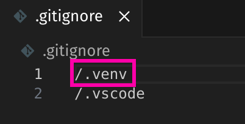
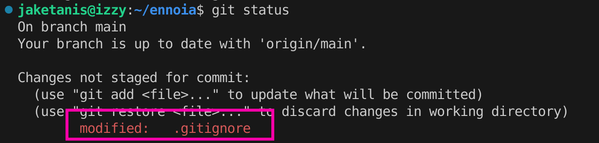

March 2026
This document explains how to set up a virtual enviornment on a Linux machine. It will also go over how to remove a virtual environment that was accidentally included in the source code.
A virtual environment allows for configuring a project to specific versions of Python and modules without affecting your computer. Instead of installing the necessary software on your computer to run a project, you can instead use a virtual environment to contain the software. This prevents dependency issues when trying to run projects that were not created on your computer. For more information, see https://docs.python.org/3/library/venv.html.
Sometimes you might receive a project that already has a virtual environment. This usually occurs when the original project owner forgets to not include the virtual environment in their source control. In this situation, to setup a virtual environment on your computer, you need to first remove the previous virtual environment.
Note: The following steps are for Linux based computers that use git for source control. If you are using a Windows computer, or another source control, keep in mind that the syntax might be different for some terminal commands.
In your terminal, open the file location of your Python project.

Enter ls -a. The terminal displays all of the folders and files in your project.

Identify the virtual environment folder.

Note: The folder may either be .venv or venv.
To remove the folder, enter rm -rf .venv.
Warning: You cannot recover the folder after using this command. Use with caution.
Enter ls -a again to confirm the project no longer has the folder.

Enter git add .. Git stages the changes for a commit.
Enter git commit -m "replace with your own message". Git commits the deleted folder.
Enter git push. Git pushes your changes to the remote repository.
Go to your project repository to confirm the folder is no longer there.
After deleting the virtual environment you inherited, you can now setup a virtual environment specifically for your local project.
In your terminal, enter python3 -m venv .venv. Python adds the .venv folder to your project.
Note: If you do not want to hide the folder in your file management system, use venv instead.
Enter ls -a to confirm .venv is in your project.

To activate the virtual environment, enter . ./.venv/bin/activate. The virtual environment activates.

If your project has a requirements.txt file, enter pip install -r requirements.txt to install the necessary dependencies in the project.
Note: A requirements.txt file usually contains all of the dependencies that the project uses. If your project does not have one, look through the code to determine which python modules are missing, and then install them. After you install all of the dependencies, use
pip freeze > requirements.txtto create a new requirements.txt file.
After installing the dependencies, open the .gitignore file in your text editor.
Enter /.venv to prevent git from adding the .venv folder to the repository.

Save your changes.
In your terminal, enter deactivate. The virtual environment deactivates.
Enter git add .. Git stages the changes made in the .gitignore file.
Enter git status. The terminal displays that the .gitignore file has been modified.

Note: If git shows that you modified the .venv folder, then you did not add /.venv folder to .gitignore.
Enter git commit -m "Replace with your message". Git commits your changes.
Confirm that the project repository does not have the .venv folder.